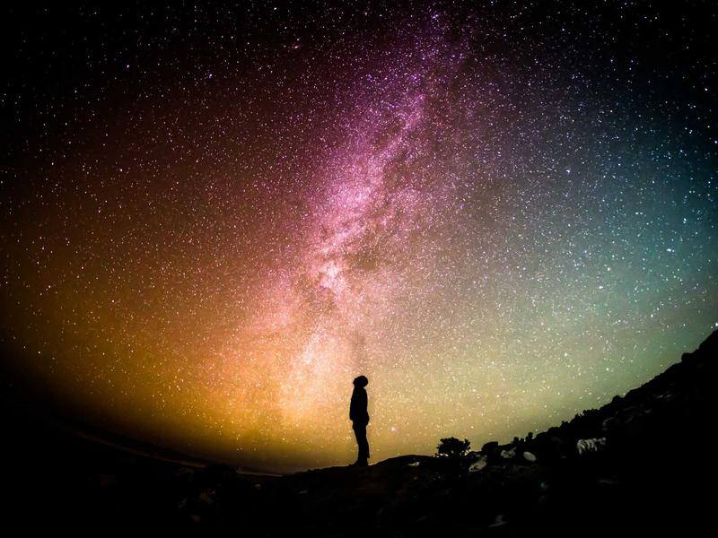
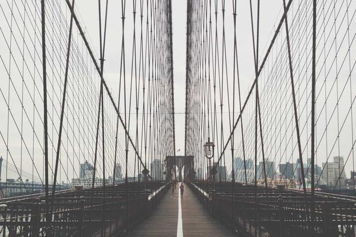

Задание 1. Вставка изображений через тег img
Способ 1 — картинка из той же папки, три размера
150x100:

300x200:

450x300:
Способ 2 — абсолютный путь к файлу
Файл находится в той же папке, но можно указать полный путь

Способ 3 — картинка из интернета
Задание 2. Вставка изображения через svg
SVG-иконка книги, ведёт на сайт Российской государственной библиотеки:
Задание 3. Фоновое изображение через CSS
Свойство background-image в CSS:
Это текст поверх фонового изображения
Задание 4. Фильтры на изображение
Оригинал
grayscale(100%)
sepia(80%)
blur(2px) brightness(1.3)
Задание 5. Рамка вокруг изображения
solid, красная
dashed, синяя
double, зелёная + border-radius
Задание 6. Изображение в таблице
Таблица из лабораторной №1 с добавленным столбцом «Иллюстрация»:
| Эпоха | Период | Ключевые события | Особенности | Иллюстрация |
|---|---|---|---|---|
| Древняя Русь | до V века | Союз племён, языческая Русь | Зодчество, орнамент, деревянное творчество |  |
| Средние века | V–XV вв. | Крещение Руси, крестовые походы | Иконопись, развитие ремёсел |  |
| Новое время | XVI–XIX вв. | Промышленная революция, расцвет искусств | Наука, фабрики, торговля | |
| Новейшее время | XX–XXI вв. | Мировые войны, цифровая революция | Кино, интернет, массмедиа |  |